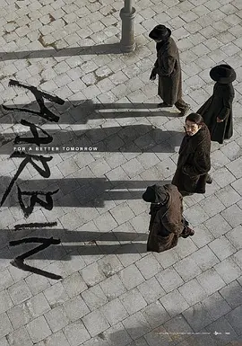

5.2
哈尔滨
Harbin
2024
韩国
评分 5.2
导演:
禹民镐
演员:
玄彬 / 朴正民 / 赵祐镇 / 全余赟 / 郑雨盛
类型:
剧情,历史,悬疑
剧情简介
1909年的严寒笼罩着哈尔滨，街道上行走的人们呼出的白气在空气中迅速消散，仿佛这座城市的紧张动荡正在以肉眼可见的方式蔓延。远离故土的独立斗士们隐藏在旅馆、茶楼和车站深处，他们以微弱却坚定的方式对抗庞大的帝国机器。安重根在混乱的环境中保持着冷静，他的行动总像是提前推演过无数次，步伐稳健，却暗含着随时可能爆发的锐意。周遭的世界暗潮翻涌。巡逻队的脚步声在深夜里愈发沉重，街口的告示板上贴满了通缉令，异国的风雪将紧迫感推向极致。禹德顺等同志在阴影中交换情报，透过窗缝观察外界的动向，一盏油灯，一张略显粗糙的地图，便构成了他们的全部战场。每一次行动都伴随着生命的风险，但他们无暇犹豫，只能在逼仄的空间里反复确认路线、计时、撤离方式。刺杀任务临近，空气仿佛凝固。安重根在车站人群中穿行，远处的汽笛声隆隆作响，紧张几乎随着铁轨的震动蔓延开来。日本方面的戒备严密，监视者无处不在，但愈是如此，斗士们越能体会到行动的重量。枪声划破空气的瞬间，是历史被重新刻写的时刻，也是所有参与者不可逆的命运交点。在随后的审判与囚禁中，安重根的沉稳并未消散。他的陈述不带煽动，却句句锋利，牢房的冰冷墙壁映照着他的意志。外界的风雪依旧呼啸，而他所点燃的火焰正悄然影响着更遥远的未来。这部影片以极具压迫力的氛围呈现了历史节点上的紧张与牺牲，让每一个选择、每一次呼吸，都显得格外沉重而清晰。